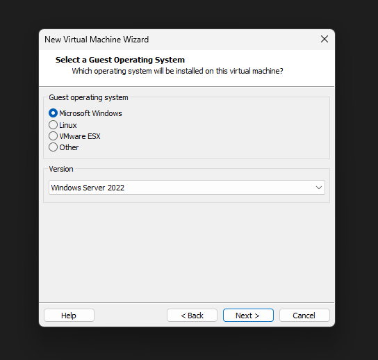
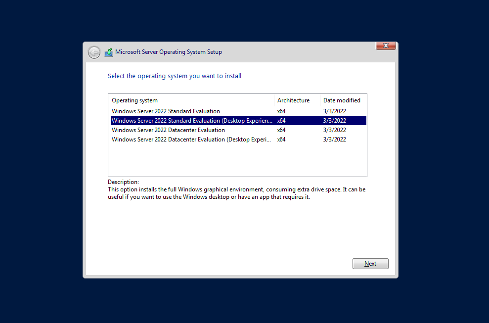
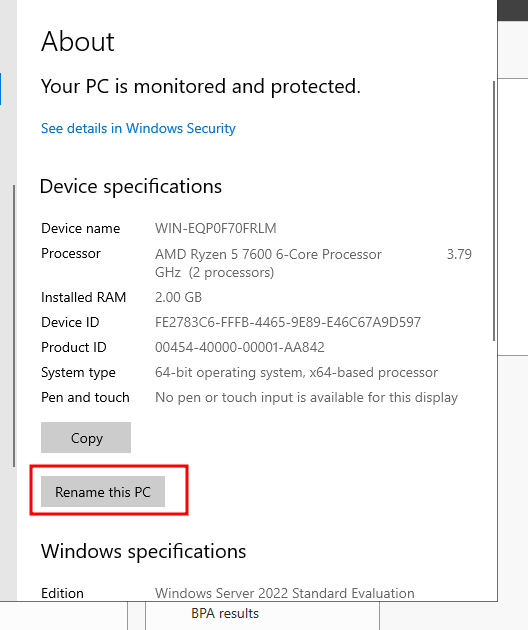
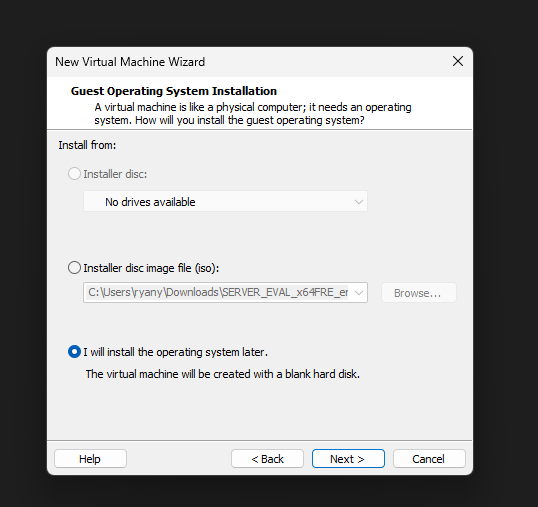
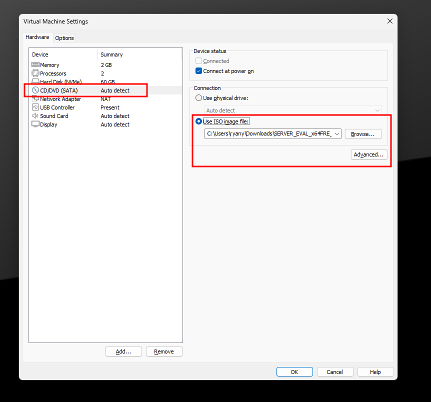
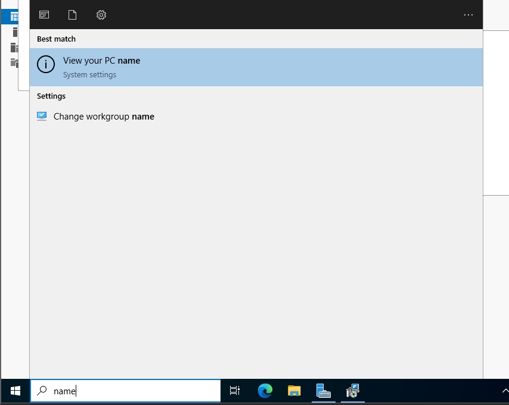
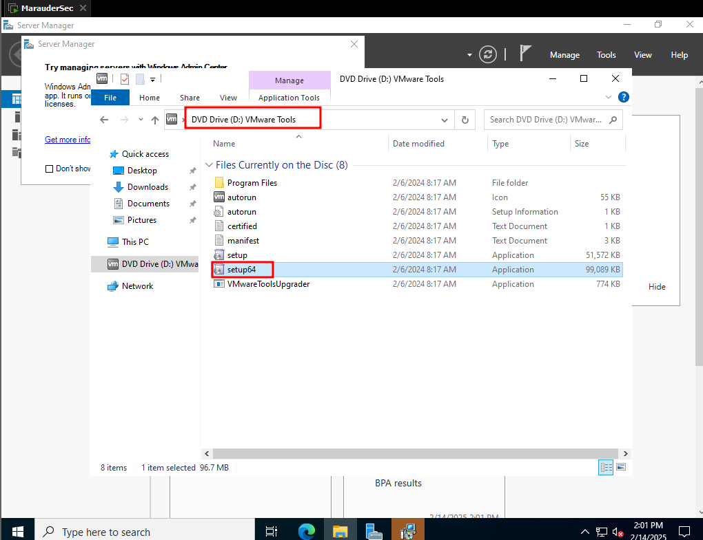
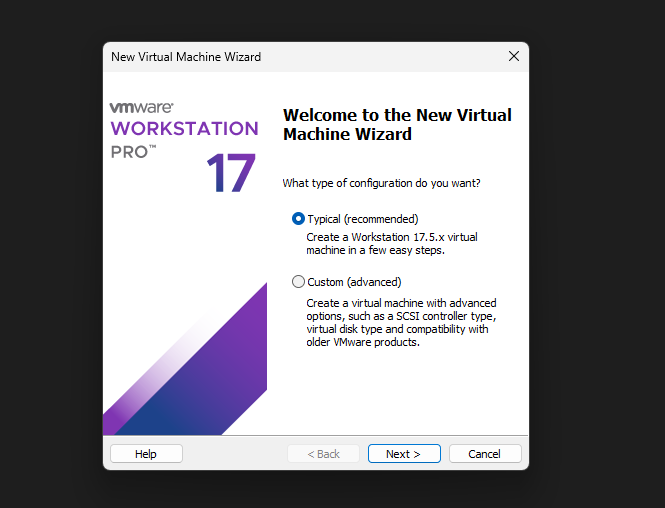
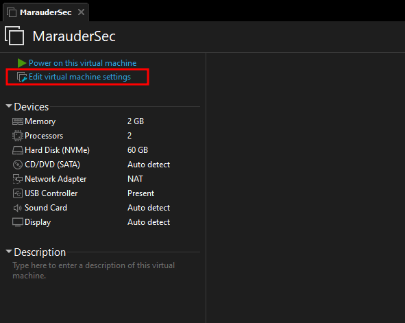

Install Windows Server 2022
Heading over to Microsoft's Eval Center, we can download a Windows Server 2022 VM.
Throughout this course, we will be using VMWare, but you can also use VirtualBox if you prefer.
Installing Server 2022 as a Virtual Machine
After downloading Server 2022, install it as a new Virtual Machine (VM). At the end of the setup, do not power on your VM yet. We need to load the ISO file downloaded from Microsoft earlier.






At the end you can click finish. Do not power on your VM yet, we need to load the iso file that was downloaded from Microsoft earlier.
If you have not unzipped it yet, now is the time to do that.
Loading the ISO File
 Notice above that I picked the Server Eval iso file, and told the system to use that image file.
This will boot much like when you load an ISO into a desktop and then boot from USB.
Powering On and Installation
Now, power on the machine and start pressing the spacebar to ensure it boots from USB or disc. If you miss this step, wait for the blue screen, power off, and retry.
Once booted, click Next, then Install Now.
Custom Installation
Select Custom Install and click Next to start the installation.
Administrator Password
Choose an administrator password and make sure to remember it. Click Finish.
Installing VMWare Tools
Click on Install Tools at the bottom of the page. If you miss this step, navigate to the D:/ drive to install VMWare tools.
Final Steps
After installing tools, change the server name. Congratulations! You have successfully set up a Windows Server.
Next Module
In the next module, we will create a Domain Controller using this installed server.